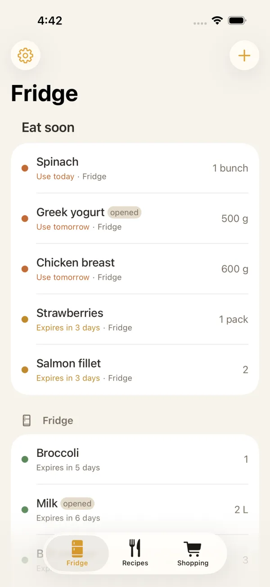
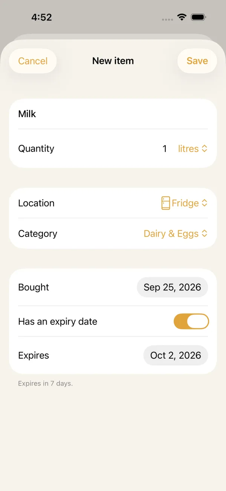
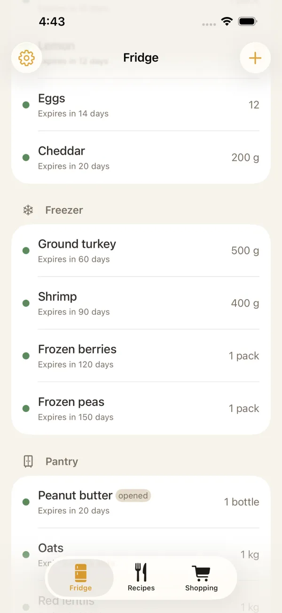
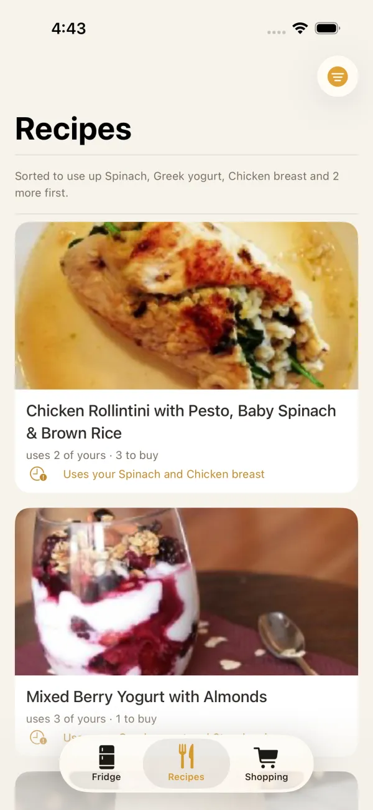
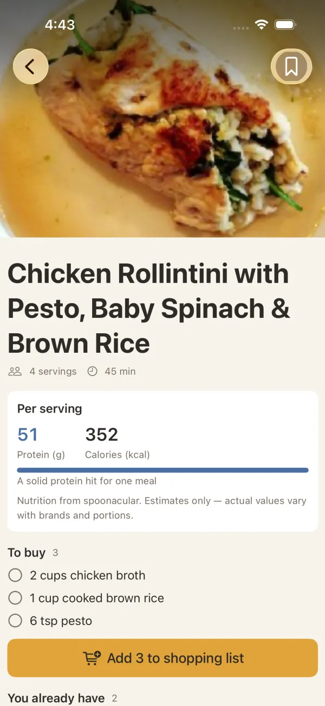
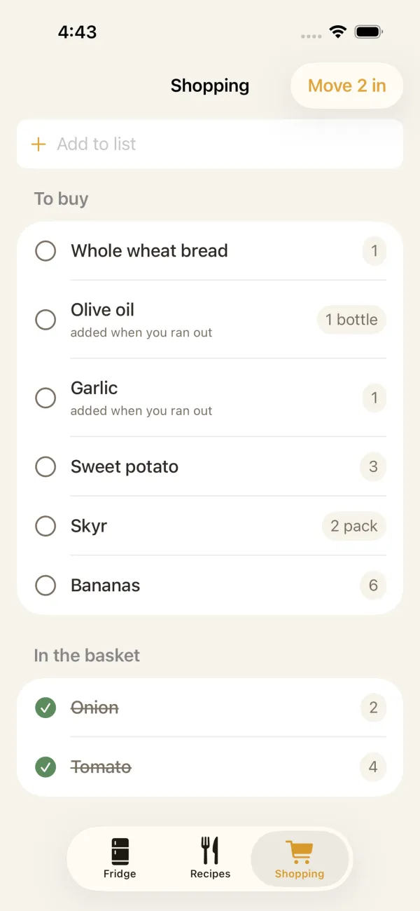
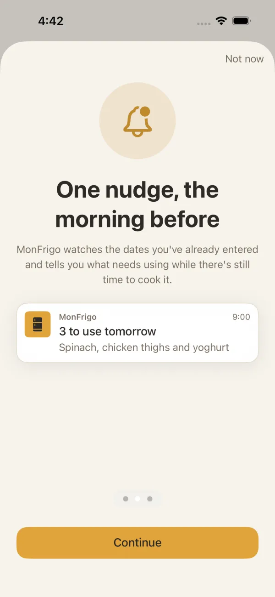

iPhone · iPad · English · Français

MonFrigo
Track your fridge, waste less food.Suivez votre frigo, gaspillez moins.
Know what's in your fridge, freezer and pantry, get a nudge the morning before something goes off, and turn what you already have into dinner.
Sachez ce qu’il y a dans votre frigo, votre congélateur et votre garde-manger, recevez un rappel la veille au matin avant qu’un aliment se perde, et cuisinez avec ce que vous avez déjà.
iPhone & iPad on iOS 17 or lateriPhone et iPad avec iOS 17 ou version ultérieure

Eat soonÀ manger bientôt
- SpinachUse today · FridgeAujourd’hui · Frigo
- Greek yogurtYogourt grecUse tomorrow · FridgeDemain · Frigo
- StrawberriesFraisesExpires in 3 daysDans 3 jours
01 — Why01 — Pourquoi
The spinach shouldn't die at the back of the fridge.
Les épinards ne devraient pas finir oubliés au fond du frigo.
Most food waste isn't a choice. It's the yogurt you forgot you opened and the chicken you meant to cook on Tuesday. MonFrigo keeps the list for you and puts what needs eating first at the top.
Le gaspillage n’est presque jamais un choix : c’est le yogourt ouvert qu’on a oublié, le poulet qu’on voulait cuisiner mardi. MonFrigo tient la liste pour vous et place en premier ce qu’il faut manger.
Add an item in seconds and MonFrigo fills in a typical shelf life for where you keep it. You can always change the date.
Ajoutez un aliment en quelques secondes : MonFrigo propose une durée de conservation selon l’endroit où vous le rangez. Vous pouvez toujours changer la date.

02 — Features02 — Fonctionnalités
Everything your fridge forgetsTout ce que votre frigo oublie
Small, calm tools that add up to less food in the binDe petits outils simples pour jeter moins
01
Eat soon, first
À manger en premier
What expires next sits at the top, colour-coded from "use today" to "this week".
Ce qui expire bientôt est en haut, avec un code couleur d’« aujourd’hui » à « cette semaine ».
02
Fridge, freezer, pantry
Frigo, congélateur, garde-manger
Keep each place separate, with quantities and an "opened" tag where it matters.
Chaque endroit séparé, avec les quantités et une étiquette « ouvert » quand c’est utile.
03
A morning nudge
Un rappel le matin
One reminder a day at 9am, the morning before things need using. Never a flood.
Un seul rappel par jour à 9 h, la veille au matin. Jamais d’avalanche.
04
Recipes from what you have
Des recettes avec ce que vous avez
Ideas built around the ingredients you need to use, with nutrition per serving.
Des idées autour des ingrédients à utiliser, avec la valeur nutritive par portion.
05
Shopping list
Liste d’épicerie
Add a recipe's missing ingredients in one tap, then tick them off in the store.
Ajoutez d’un geste les ingrédients manquants d’une recette, puis cochez-les au magasin.
06
English & French
Anglais et français
MonFrigo follows your device language, or set one just for the app.
MonFrigo suit la langue de votre appareil, ou choisissez-en une juste pour l’app.
03 — The app03 — L’app
A quick look insideUn aperçu
Swipe through the main screensFaites défiler les écrans principaux





04 — Privacy04 — Confidentialité
Your fridge is your business.
Votre frigo, c’est votre affaire.
- No account: no sign-up, no email.
- On your device: your foods, dates, lists and recipes are stored only on your phone.
- Local reminders: scheduled on your device, with no push server.
- Nothing sold: only anonymous usage and crash data, never used for advertising.
- Aucun compte : ni inscription, ni courriel.
- Sur votre appareil : vos aliments, dates, listes et recettes restent sur votre téléphone.
- Rappels locaux : programmés sur votre appareil, sans serveur.
- Rien n’est vendu : seulement des données anonymes d’utilisation et de plantage, jamais pour la publicité.
Read the full privacy policy →Lire la politique de confidentialité →
05 — FAQ05 — FAQ
Questions people askQuestions fréquentes
How are expiry dates chosen?
When you add a common food, MonFrigo fills in a typical shelf life for where you store it. You can always change the date.
When do reminders arrive?
Once a day at 9am, for what needs using. Make sure notifications for MonFrigo are allowed in iOS Settings.
Does my data sync between devices?
Not yet. Everything is stored on your device.
How do I change the language?
MonFrigo follows your device language (English or French). You can set a different one for the app in iOS Settings → MonFrigo → Language.
Comment les dates d’expiration sont-elles choisies ?
Quand vous ajoutez un aliment courant, MonFrigo propose une durée de conservation selon l’endroit où vous le rangez. Vous pouvez toujours changer la date.
Quand les rappels arrivent-ils ?
Une fois par jour à 9 h, pour ce qu’il faut utiliser. Vérifiez que les notifications de MonFrigo sont autorisées dans les Réglages d’iOS.
Mes données sont-elles synchronisées entre appareils ?
Pas encore. Tout est enregistré sur votre appareil.
Comment changer la langue ?
MonFrigo suit la langue de votre appareil (anglais ou français). Vous pouvez en choisir une autre dans Réglages → MonFrigo → Langue.
Another question? Visit support →Une autre question ? Assistance →
MonFrigo
For iPhone and iPad · iOS 17 or laterPour iPhone et iPad · iOS 17 ou version ultérieure
Made by Alireza ToghianiCréé par Alireza Toghiani
MonFrigo is built by one independent iOS developer. I read every message, so if something's missing or broken, tell me.
MonFrigo est conçu par un développeur iOS indépendant. Je lis tous les messages : si quelque chose manque ou ne fonctionne pas, écrivez-moi.
Less waste, starting tonightMoins de gaspillage, dès ce soir